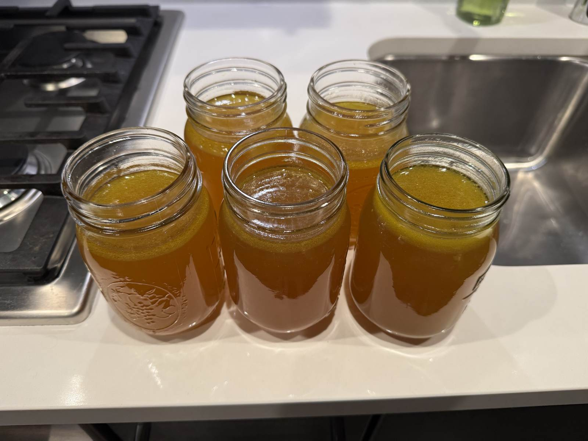
Low-FODMAP · High-Collagen Bone Broth
Beef bones and chicken feet, roasted and pressure-cooked for hours into a low-calorie, high-protein broth loaded with collagen and minerals — built for gut health, not just flavor.
This recipe is built specifically for low-FODMAP, high-collagen bone broth — no onion, no garlic, easy on a sensitive gut. Beef bones and chicken feet break down over the long pressure-cook into a base that's high in collagen and minerals, low in calories, and rounded out by ginger and a turmeric-pepper pairing that boosts curcumin's anti-inflammatory benefits.
Ideal for meal prepping: cheap ingredients (~$15 for five jars), 15 minutes of hands-on prep, and five jars that cover a full week.
Low-FODMAP ingredients · makes 5 jars
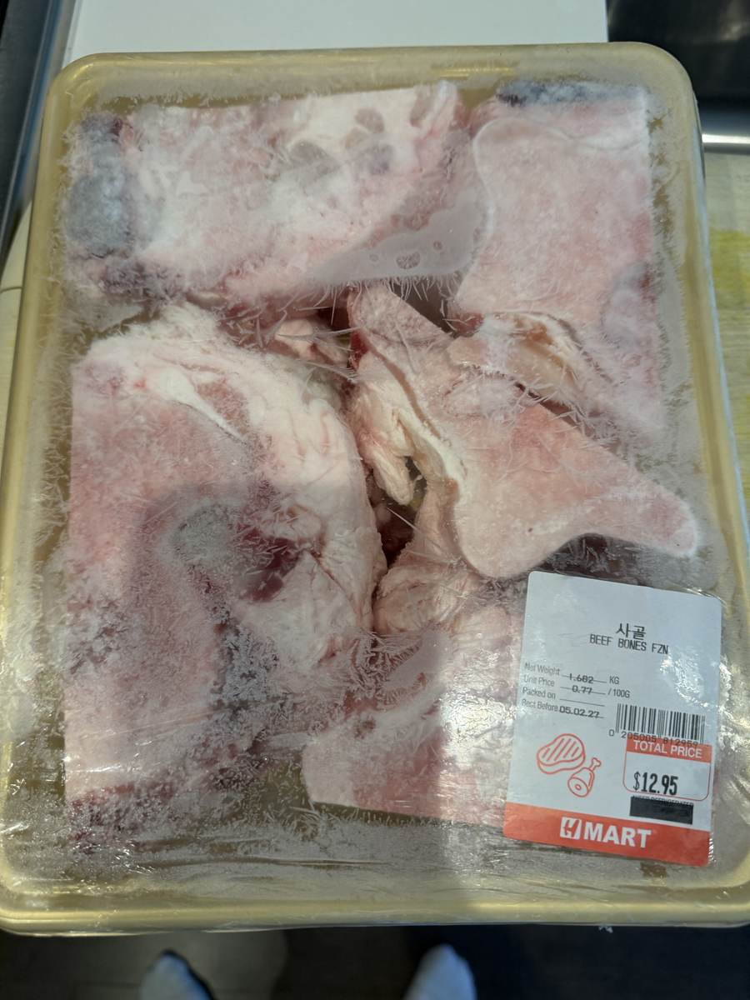
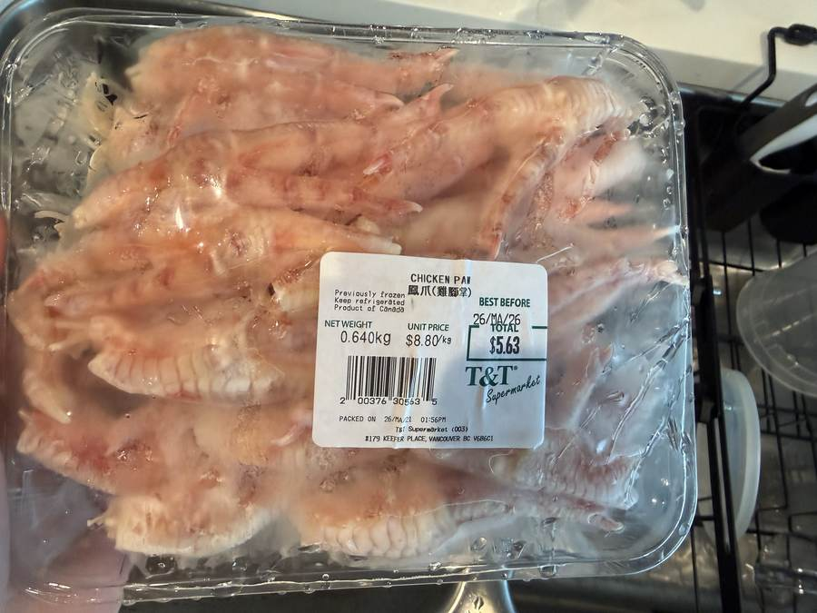
Method · 8 steps
Air-fry the beef bones at 200°C for 20–30 minutes, until the surface fat renders off — or roast in the oven at 220°C for 35–40 minutes instead. Thaw the chicken feet if frozen, and let the bones cool before they go in the pot.
Roughly chop the carrots and celery, slice the ginger and turmeric thin, and take the green tops off the chives. Portion out the pepper, salt, and apple cider vinegar so everything's ready to go in one motion once the bones are in.
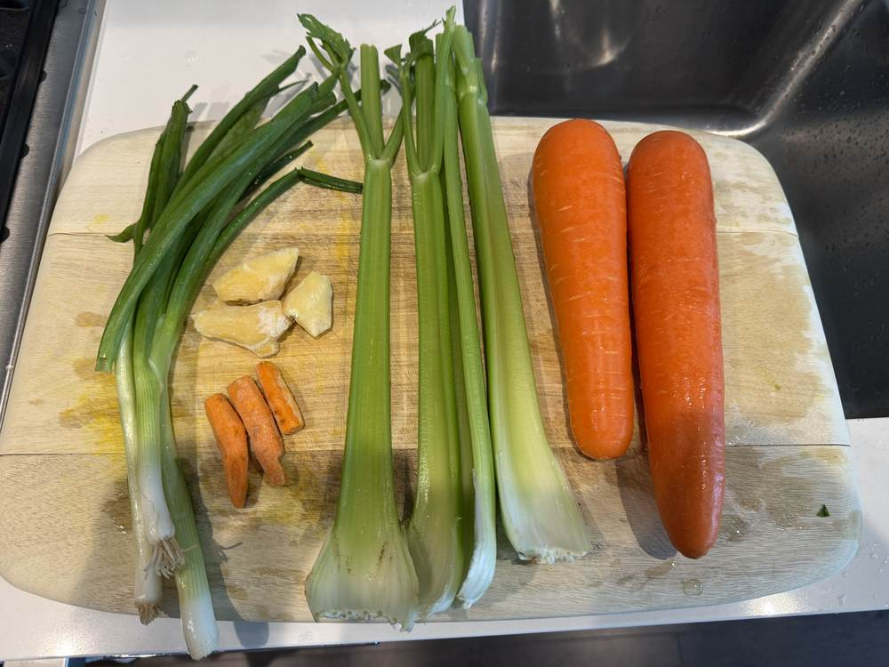
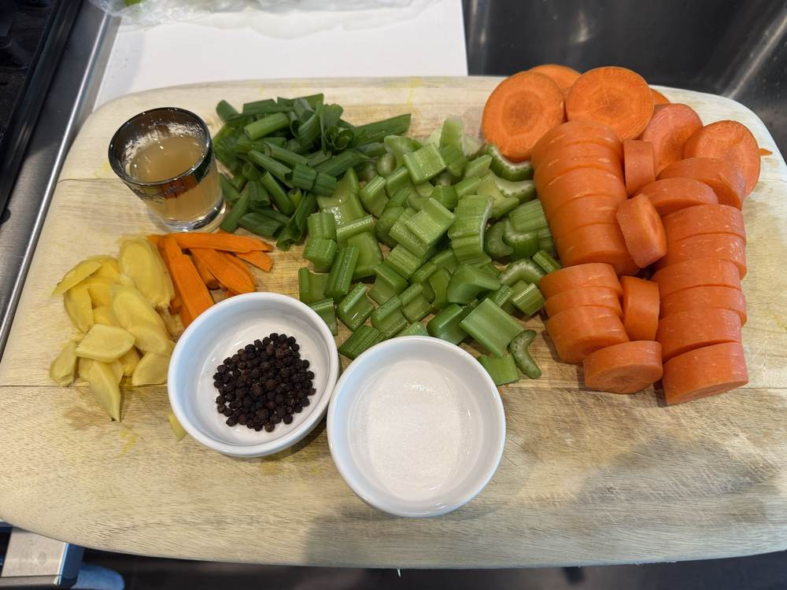
Once the beef bones have cooled, add them to the pressure cooker along with the chicken feet, chopped vegetables, seasoning, and vinegar. Fill with water up to the max fill line.
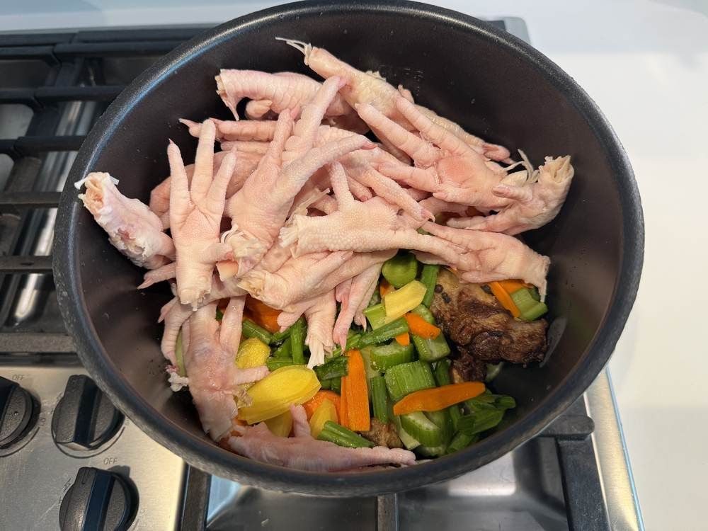
Set to high pressure for 3 to 3.5 hours on the Stock/Soup setting. Once time's up, let it come down on its own — a full natural release, no venting it early.
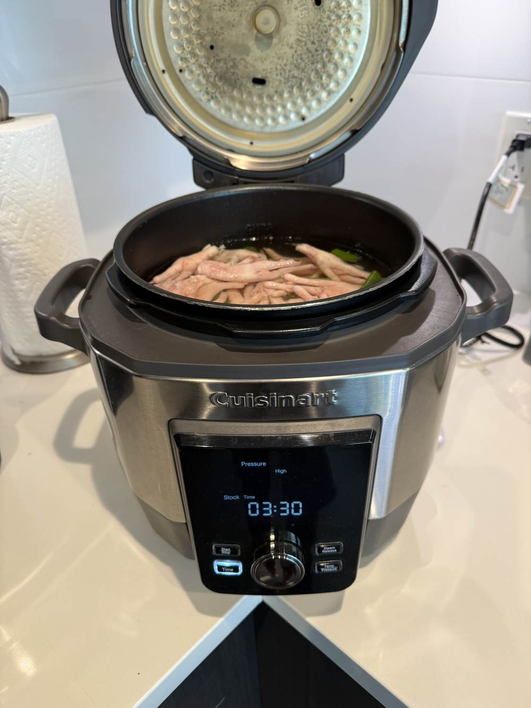
Once the lid opens, the broth should be a deep amber and the chicken feet nearly translucent. Lift out the inner pot and let it cool for 30–60 minutes before pouring.
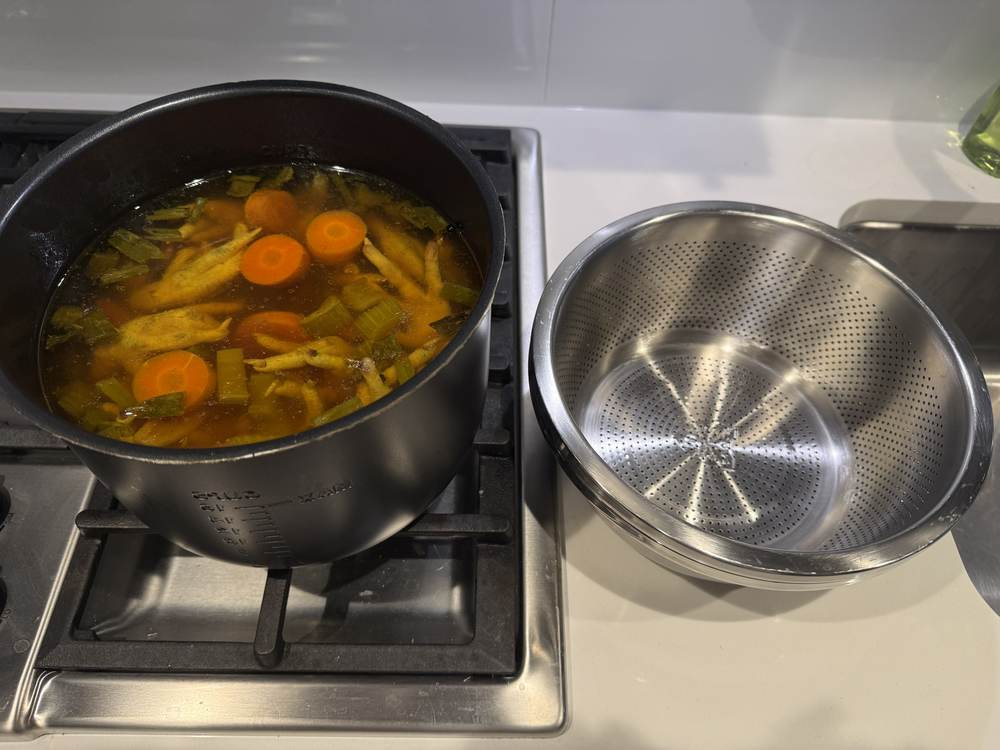
Pour the whole pot through a fine strainer — a strainer-and-pot combo works well here. Discard or compost what's left behind; it's given up everything it had.
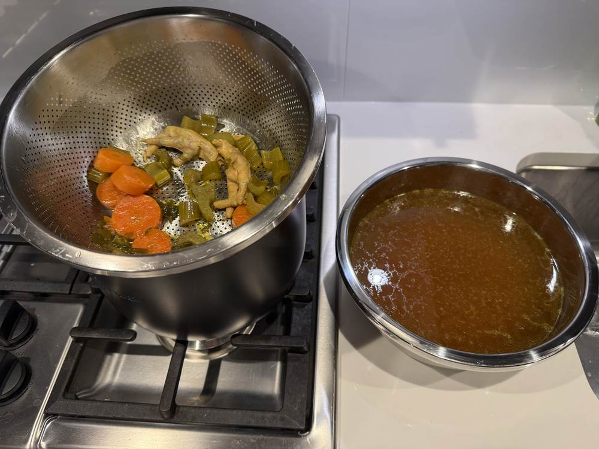
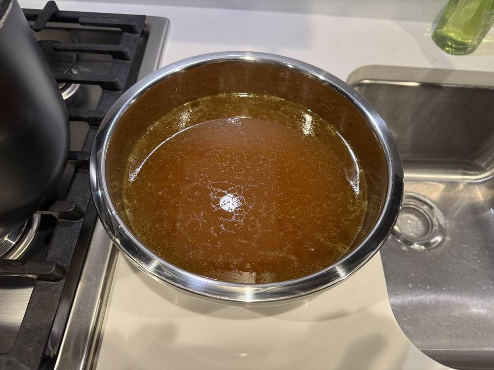
Pour the strained broth into your jars, leaving a little headroom at the top — especially in any you're planning to freeze.
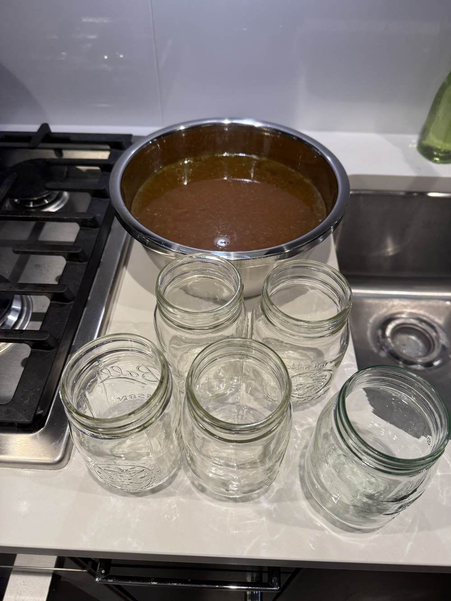
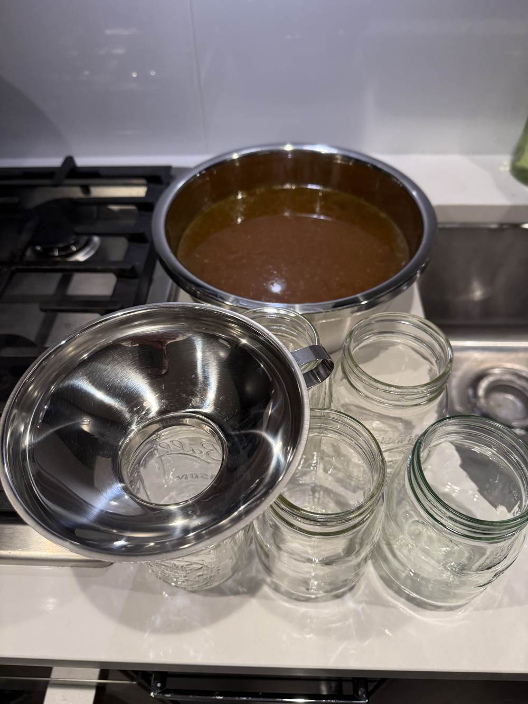
Let the jars come down to room temperature before sealing and moving them to the fridge. This batch makes five 500ml jars — enough for a full week.
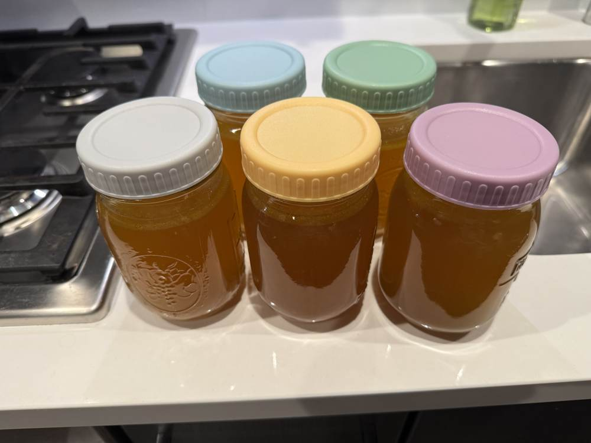
Per 500ml jar · estimated
Every batch will vary a bit. Also rich in minerals from the long cook. If it gells when chilled, that's high collagen — exactly what you're after.
Storage & reheating
Up to 1 week, sealed — this batch is sized for a full week of meal prep.
Several months. Leave extra headroom in any jar going in the freezer — liquid expands as it freezes.
Microwave 2–3 minutes to thaw and warm through. Or thaw in the fridge overnight and heat gently on the stove.
Built low-FODMAP on purpose. The green tops of the chives carry the aromatic lift that onion usually would, backed up by ginger and turmeric.